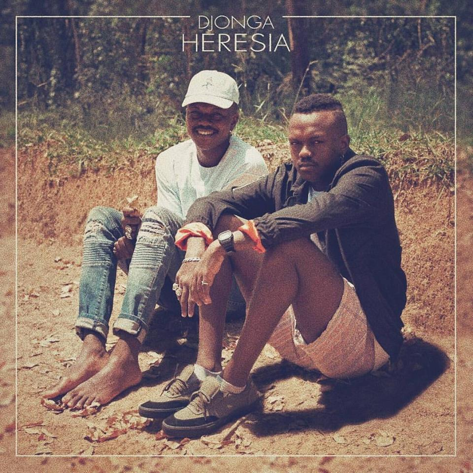
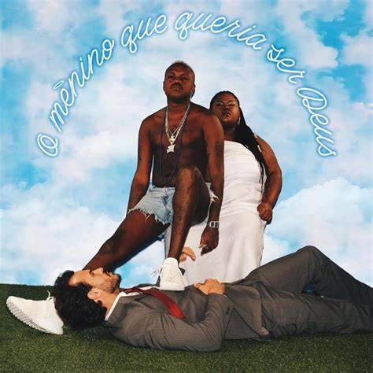
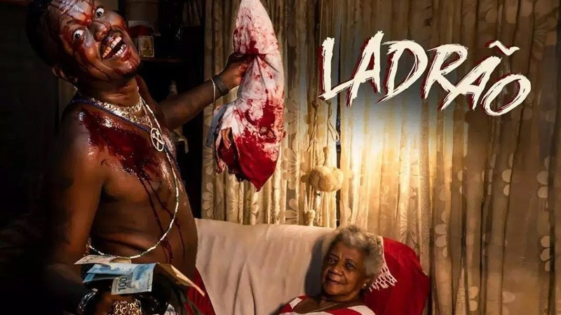
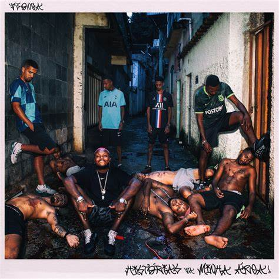
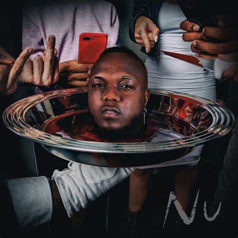
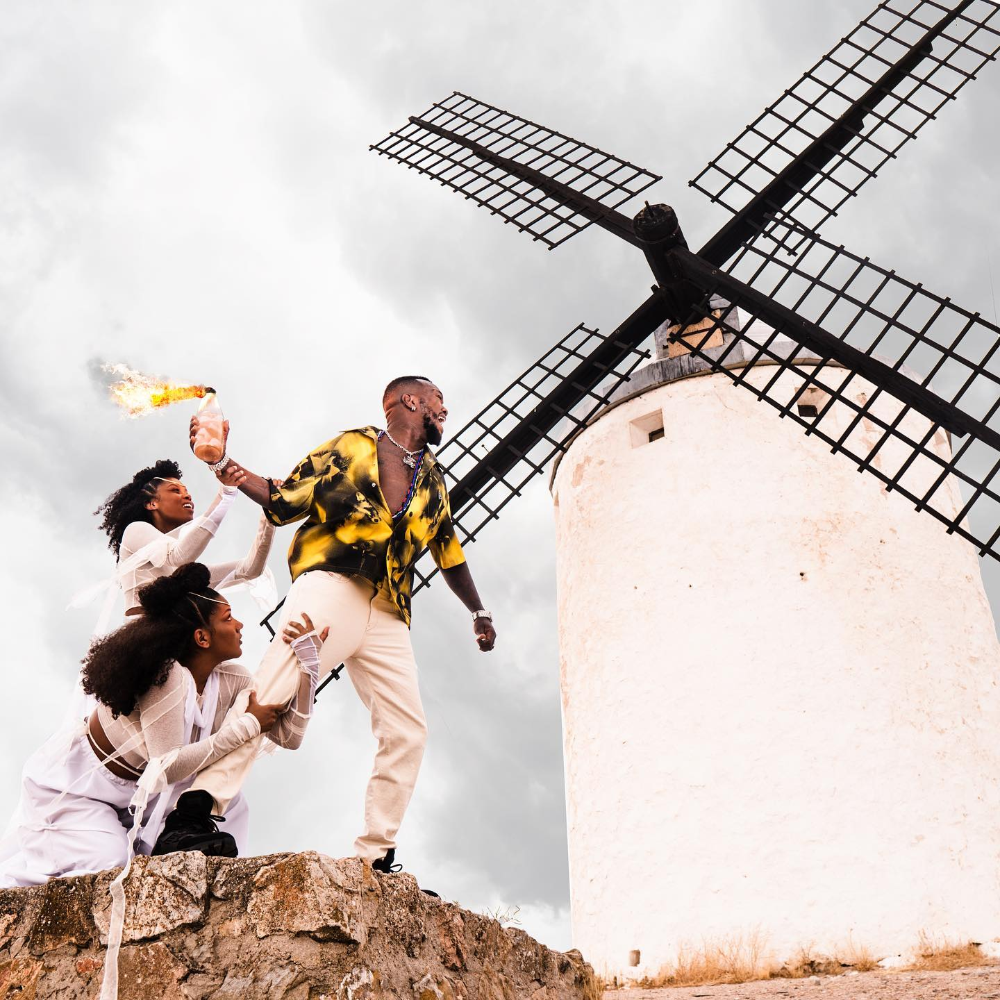
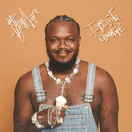

Apresentação
Gustavo "Djonga" Pereira, é um rapper, escritor e compositor brasileiro. O artista chama a atenção por suas letras diretas e agressivas, com fortes críticas sociais.
Carreira
Em 2012 Djonga produz sua primeira música: "Corpo fechado" trabalhando com o estúdio Oculto Beats. Em seguida em conjunto com Coyote Beats lançou o EP "Fechando o corpo" com sete faixas. Coyote que se tornaria parceiro de Djonga até os dias atuais.
Em 2016, Djonga e Hot criaram o DV tribo um grupo de rap formado por artistas de Belo Horizonte. O grupo ganhou notoriedade com o álbum Pirâmide Perdida. No mesmo ano Djonga é convidado para participar de uma música com Baco Exu do Blues. No final do ano participa do Poetas no topo 1 do canal Pineapple Storm TV.
A partir de 2017 Djonga inicia a tradição de lançar albuns anualmente todo dia 13.
Albums lançados
- Heresia
- O menino que queria ser Deus
- Ladrão
- Histórias da minha área
- NU
- O dono do lugar
- Inocente demotape
Heresia
Lançado em 13 de março de 2017 o albúm contém 10 músicas, contando com participação do carioca BK.
O menino que queria ser Deus
Novamente no dia 13 de março de 2018 djonga lança seu segundo albúm com participações de Sant, Karol Conká e hot. Com produção de Coyote Beats.
Ladrão

Lançado em 13 de março de 2019, o albúm é inspirado em Robin Hood
aponta a importância de valorizar sua raízes e não se esquecer de onde veio.
Djonga disse em suas redes sociais: O tipo de ladrão que busca e traz de volta pras minhas e pros meus
Histórias da minha área
Lançado em 13 de março de 2020 o albúm relata histórias de Djonga e seus amigos próximos.
NU
Após o polêmico em 7 de Dezembro de 2020, o rapper retorna as redes sociais para anuciar mais um albúm que é lançado em 13 de março de 2021.
O dono do lugar
O albúm foi lançado em 12 de outubro de 2022, em uma das músicas Djonga fala sobre como "nu" foi considerado um albúm fraco.
Inocente Demotape
Último albúm do artista até o momento. Lançado em 13 de outubro de 2023
Principais conquistas
| Prêmio | Data de recebimento |
| 6º melhor disco brasileiro - Rolling Stone Brasil | 2018 |
| MTV Millennial Awards - Beat BR | 2020 |